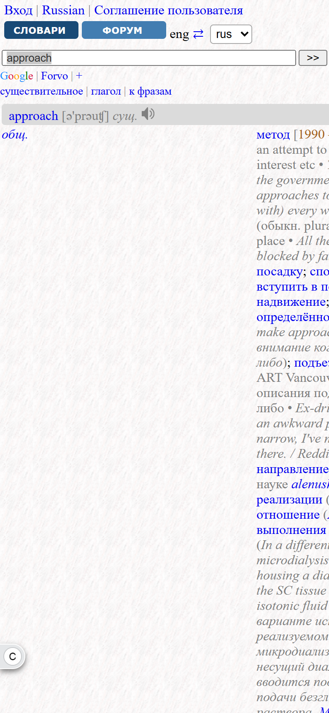
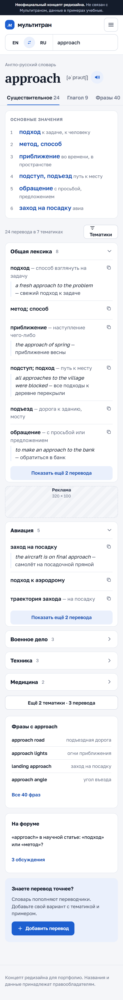
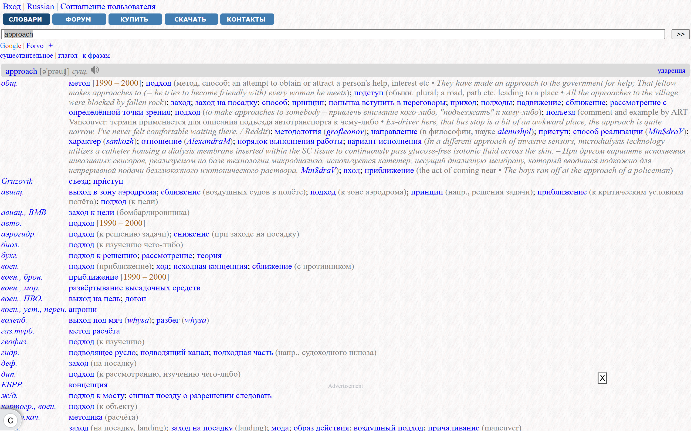
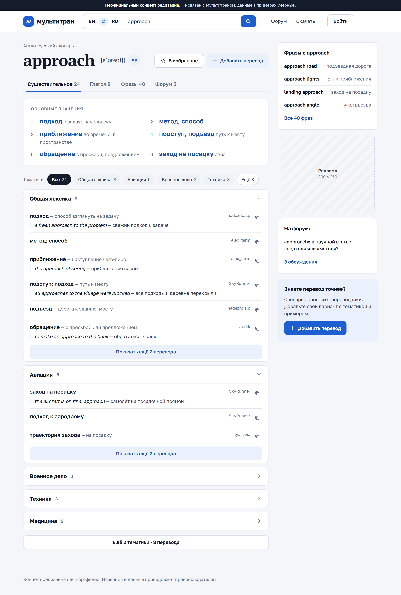
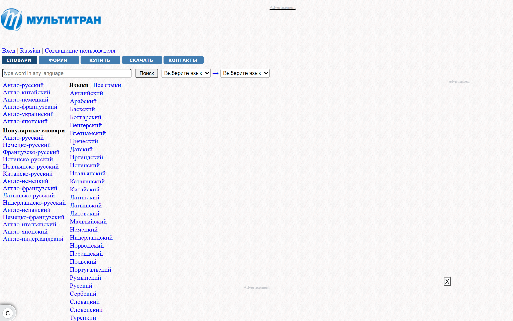
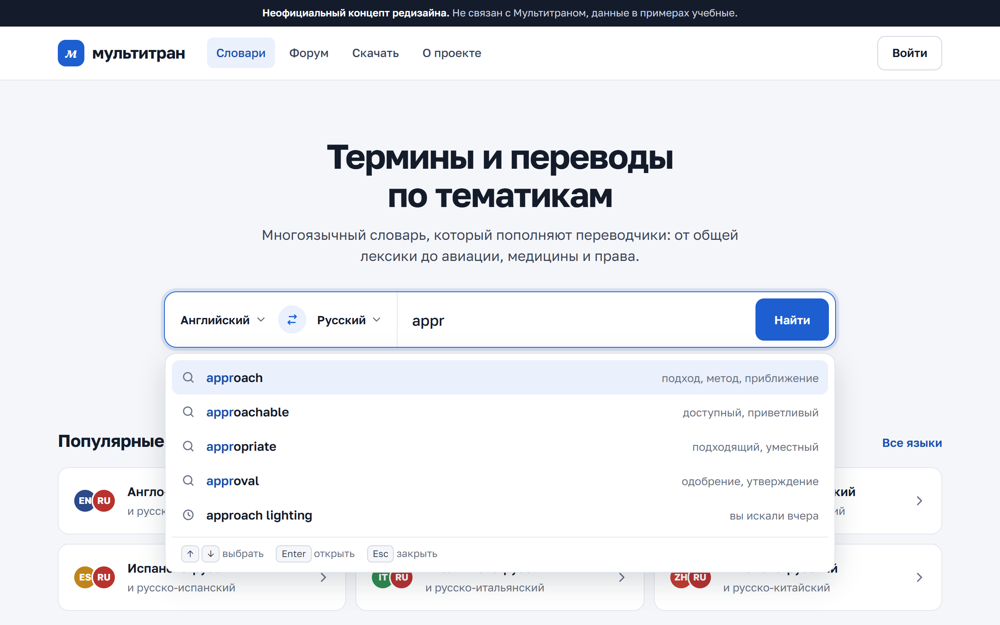

Неофициальный концепт редизайна. Слева — сайт 23.10.2026, справа — макет. Переводы в макете учебные.




Заголовков h2: 0 → 9 (основные значения, тематики, боковые блоки) — по тематикам можно перемещаться со скринридера. Место под рекламу 300 × 250 зарезервировано справа.


Поиск — главный элемент: пара языков с переключателем, подсказки с переводом и историей, управление с клавиатуры.